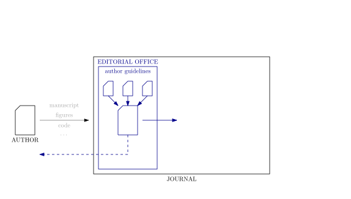
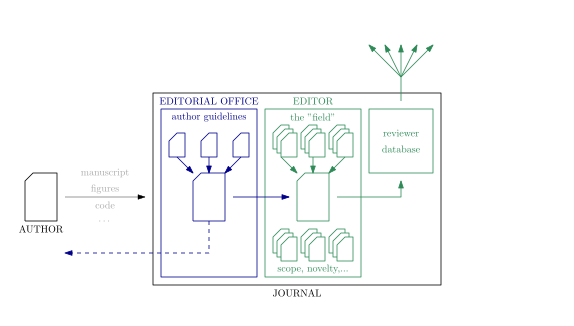
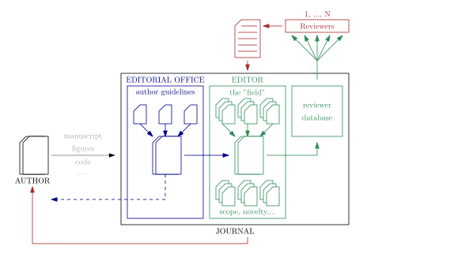
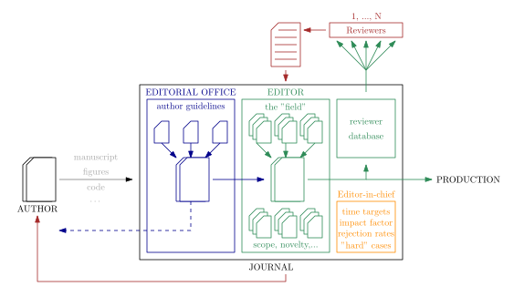

Publishing
...insights from an editor...
Bastian Epp
What are we up to?
Publishing a paper in a journal
Reviewing: The "why" and the "how"
The author
The editorial office
The editor
The reviewer
"Overwatch"
Reviewing: The "why" and the "how"
The author
"It is ME delivering value..."
The editorial office
"Why the f*** do they interfere...?"
The editor
"...please..."
The reviewer
"The damn second reviewer..."
"Overwatch"
"I have no clue that this exists..."
Reviewing: The "why" and the "how"
The author
Provide the content in a constructive way
"I have this really cool study I want to get published...."
Read the journal scope, guidelines, and submission procedures - it will save you pain!
The editorial office
Make sure the submission adheres to guidelines
"Is the submission in a format that we potentially might work with?"

The initial quality check is to ensure smoothness in the system
The editor
Ensure and maximize scientific quality, interest and relevance
"Does this work potentially contribute to the field?"

Who would be suitable to evaluate this piece of work?
The reviewer
Support to maximize the scientific value
"I know something about this...."

This is the CORE ELEMENT in qality control in scientific literature!
"Overwatch"
Ensure strategic goals
"How can me position ourselves?"

Strategic thinking comes with administration and compliance!
Reviewing: The "why" and the "how"
With power comes responsibility
The role of peer-reviewing
Novelty and rigour - based on fairness
What do you consider a "valuable" publication?
- Contribution needs to be novel
- Contribution needs to be scientifically sound
- Contribution needs to address a relevant question
- Contribution needs to be embedded in the existing literature
- ...
The task of the reviewer
Assess as a "critical friend"
What do you consider a "valuable" review?
- Is the question at hand clear?
- Is there proper support form the litaerature (where applicable)?
- Is the line of arguments logical?
- Do the methods allow to investigate the problem?
- Do the results allow to support the conclusion?
Some examples
"All hearing aids are bad. Therefore, "
"Many studies showed that cochlear synaptopathy is detrimental for hearing. Different species..."
"We hypothesize: Is it possible that monkeys perhaps enjoy reading Kirkegaard?"
"The ANOVA revealed no significant effect of...but just barely."
"Please add the following references to my publications:..."
"I do not belive the data"
"The conclusion is not supported bythe data. The data would also support..."
Things that the reviewer should not care about
Typesetting
Language details
Figure placement
Typos
Let's summarize
Submitting a paper triggers a large machinery
The systems want to SUPPORT the authors to ensure QUALITY on which science can develop
When acting a reviewer, we act as a critical friend, INDEPENDENT of personal motivation and believes
We do not have to agree wth the authors - the judgement is based on a critical evaluation of evience, method and logical arguments